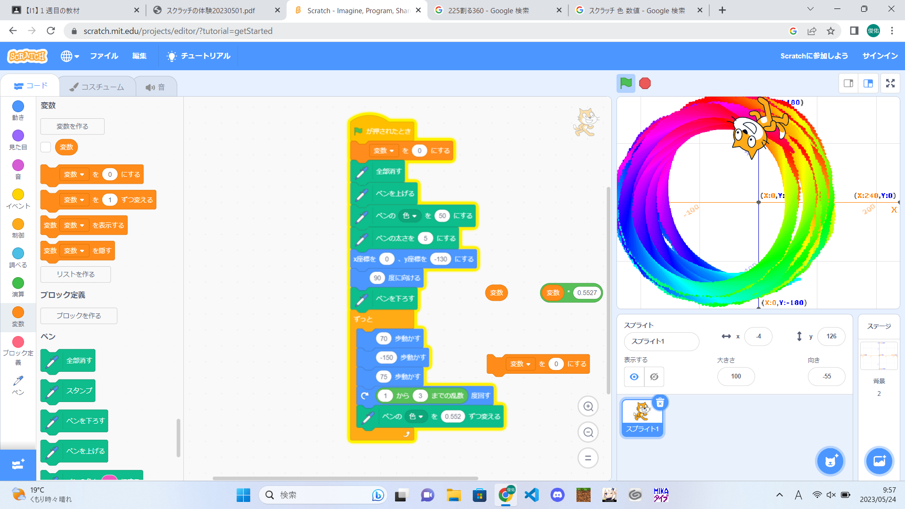
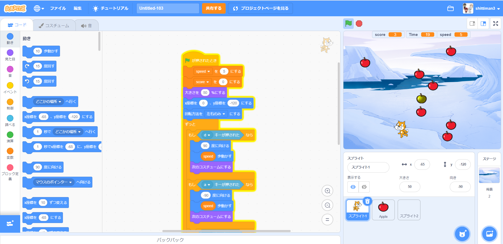

1週目のレポート ： 公大高専１年実習I-1
3-a班18番 高垣俊佑
第1週目
1-1 サイエンスアート

1.内容
スクラッチを使って猫が虹色の円のようなを描くプログラムを作成した。
円の一周をだいたい同じような色の虹で回るように角度を計算した。
2.感想
円を一周させるごとに色も循環するように設計するための計算が難しかった。
1-2 ゲーム

1.内容
りんごを降らせて猫がとるようなプログラムを作成した
2.感想
金のリンゴを追加したりいくつものリンゴを降らせるようにアレンジしたのが面白かった
1-3 ホームページ作成
私のホームページ
1.内容
画像を張り付けるホームページを作成した。
2.感想
コードを書き換えるのは簡単だったけどこれを一から作ろうとすると今の実力では無理だと思った。